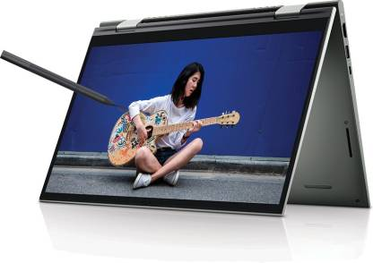

Home/Laptops
DELL Inspiron Ryzen 5 Hexa Core 5500U - (8 GB/512 GB SSD/Windows 10) Inspiron 7415 2 in 1 Laptop (14 Inch, Pebble Green, 1.56 KG, With MS Office)
₹66,447/-
The Dell Inspiron 14 7415 2-in-1 Laptop has been designed and created to offer a device that you can carry along easily and do any task from anywhere you want. This device features Wide-viewing Angle Panels (WVA) for immersive visuals, a 360° Hinge to change the modes with ease, and an Active Pen to write and/or draw easily.
Carry It Along 2 in 1 Laptop 14 Inch Full HD LED Backlit, WVA Display (Touch with Active Pen) Finger Print Sensor for Faster System Access Light Laptop without Optical Disk Drive